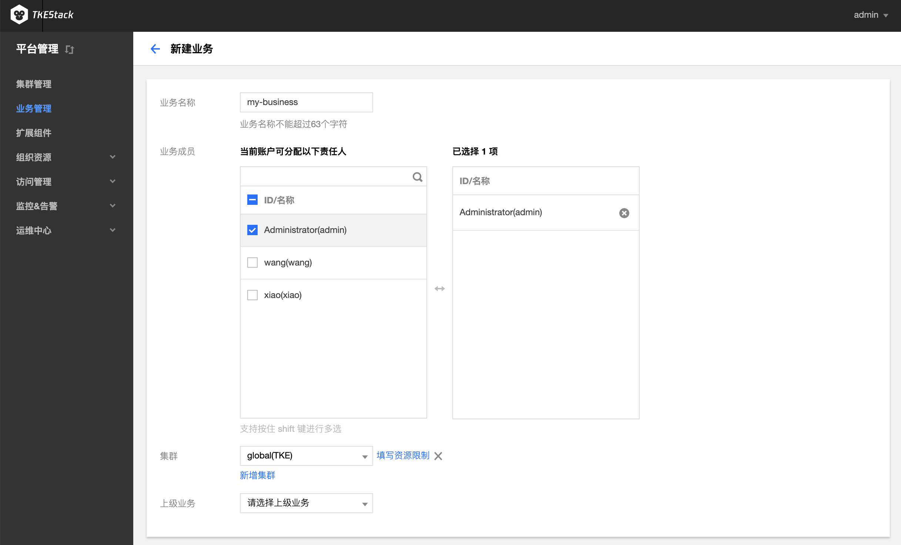
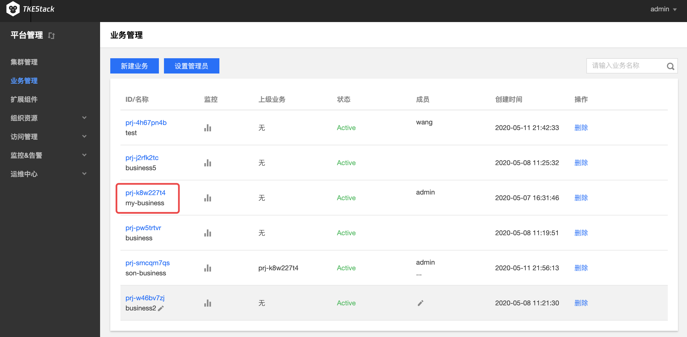

业务管理
概念
在这里用户可以管理线上业务。
操作步骤
新建业务
注：业务可以实现跨集群资源的使用
- 登录 TKEStack。
在【平台管理】控制台的【业务管理】中，单击 【新建业务】。如下图所示：

在“新建业务”页面，填写业务信息。如下图所示： 
- 业务名称：不能超过63个字符，这里以
my-business为例 - 业务成员： 【访问管理】中【用户管理】中的用户，这里以
admin例，即该用户可以访问这个业务。 - 集群：
- 【集群管理】中的集群，这里以
gobal集群为例 - 【填写资源限制】可以设置当前业务使用该集群的资源上限（可不限制）
- 【新增集群】可以添加多个集群，此业务可以使用多个集群的资源（按需添加）
- 【集群管理】中的集群，这里以
- 上级业务：支持多级业务管理，按需选择（可不选）
- 单击最下方 【完成】 按钮即可创建业务。
{kind=link}
添加业务成员
- 登录 TKEStack。
- 切换至 【平台管理】控制台，点击【业务管理】。
在“业务管理”页面中，可以看到已创建的业务列表。鼠标移动到要修改的业务上(无需点击)，成员列会出现修改图标按钮。如下图所示：

注意：修改业务成员仅限状态为Active的业务，这里可以新建和删除成员。
查看业务监控
- 登录 TKEStack。
- 切换至 【管理】控制台，点击【业务管理】。
在“业务管理”页面中，可以看到已创建的业务列表。点击监控按钮，如下图所示：

在右侧弹出窗口里查看业务监控情况，如下图所示：

删除业务
- 登录 TKEStack。
- 切换至 【平台管理】控制台，点击【业务管理】。
在“业务管理”页面中，可以看到已创建的业务列表。点击删除按钮，如下图所示：

注意：删除业务成员仅限状态为Active的业务
对业务的操作
- 登录 TKEStack。
在【平台管理】控制台的【业务管理】中，单击【业务id】。如下图所示： 
a. 业务信息： 在这里可以对业务名称、关联的集群、关联集群的资源进行限制等操作。

b. 成员列表： 在这里可以对业务名称、关联的集群、关联集群的资源进行限制等操作。

c. 子业务： 在这里可以新建本业务的子业务或通过导入子业务将已有业务变成本业务的子业务

d. 业务下Namespace列表： 这里可以管理业务下的Namespace

单击【新建Namespace】。在“新建Namespace”页面中，填写相关信息。如下图所示：

名称：不能超过63个字符，这里以
new-ns为例 集群：
my-business业务中的集群，这里以global集群为例 资源限制*：这里可以限制当前命名空间下各种资源的使用量，可以不设置。
{kind=link}